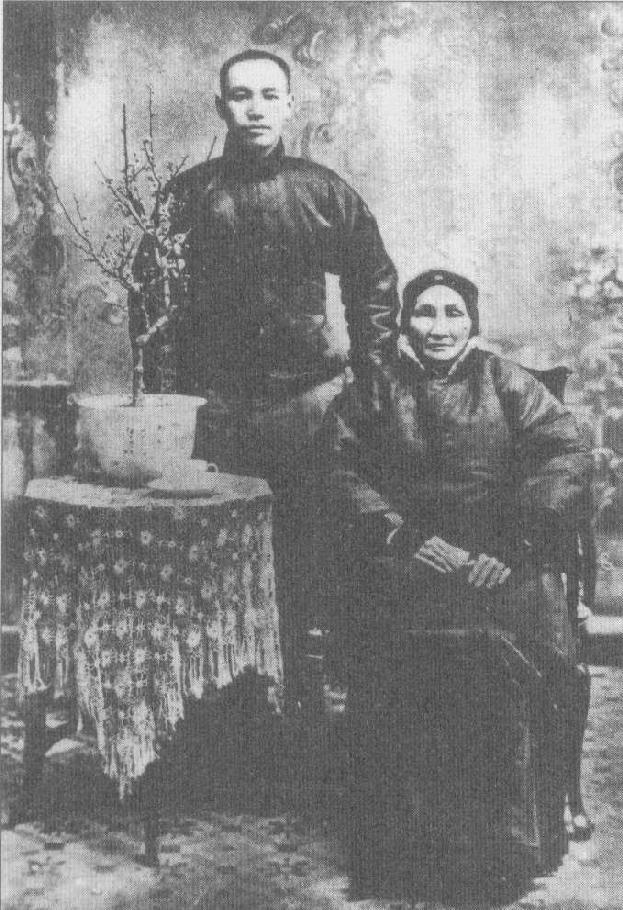
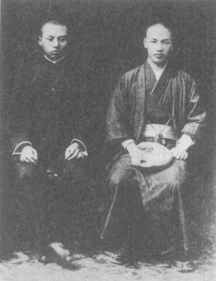
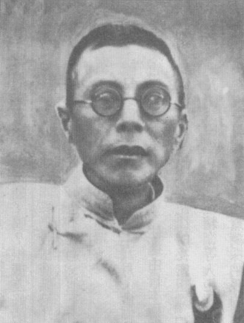
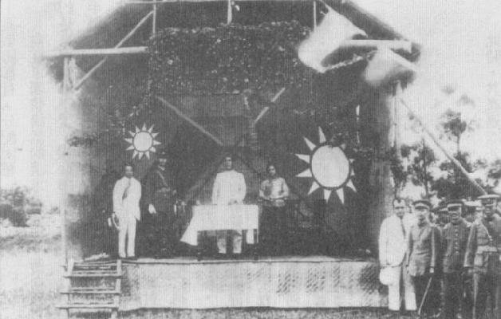
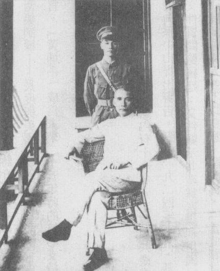

|
前一页 后一页 回目录 回主页 |
第一章：新儒家青年 1945年8月15日近午时分，在迭遭战火摧残、炽热的重庆，一名助手带著一台短波收音机进入中国领导人蒋介石宽敞但简朴的办公室，打开东京电台频道。几分钟后，通晓日语的蒋和日本人民一样静静地听到裕仁天皇首次“御音”广播。代表日本灵魂神圣化身的裕仁要子民“忍其不能”，为了保护无辜性命不再受敌人“残忍”的炸弹伤害，他接受了盟国领袖的波茨坦宣言。换言之，伟大的武士之国接受无条件投降。 终于，大战结束了。中国人民在蒋领导下浴血抗战八年，有一半的时间更是孤立无援。其实自从1931年日本侵占满洲以来，抗日战争即已间歇性地开打。经过十四年的冲突，中国士兵至少伤亡三百万人，可能另有一百万人因病及营养不良而亡故①。阵亡的士兵有极大多数——九成以上——是蒋的部队，不是中国共产党的部队。死于战乱——炸死、烧死、饿死、淹死、被枪打死——的中国人民还有九百万人。不同时期，前后有数千万人成为难民，很多人颠沛流离死在路途中，不少人则在难民营过世。逃出上海等大城市的中产阶级家庭几乎失去了一切。数百万个农村家庭是日本皇军“烧光、砸光、杀光”三光政策的牺牲者，沦为赤贫；整个城市被夷为平地！有些城市，如长沙，还不只一次遭到焚城噩运。 ① Michael Clodfelter, Warfare and Armed Conflicts: A Statistical Reference, vol. 2 (London: McFarland and Company, 1992), p.956. 当天傍晚，蒋来到重庆酷热不堪的广播电台，向全国人民宣布这个消息。他在麦克风前和平常一样笔挺地站立，穿着朴素的军服。他的秘书陈布雷当天生病，因此他本人亲自撰写讲稿。他调整了一下眼镜，用他清晰的尖嗓子向全国同胞报告日本投降了，赞扬中国人的英勇抗战，但也不忘褒奖盟国①。他说：“正义必然胜过强权的真理，终于得到了他最后的证明，这亦就是表示了我们国民革命历史使命的成功。”绝大部分中国人听不懂他浓厚的宁波腔，但大家晓得是他在讲话。接下来他谈到未来：“如果这一次战争是人类历史上最后一次的战争，那么我们同胞们虽然曾经受了忍痛到无可形容的残酷与凌辱，然而我们相信我们大家决不会计较这个代价的大小和收获的迟早的。”然后，他迂回暗指内部敌人，提到说：“相信我们武装之下所获得的和平，并不一定是永久和平的完全实现，一直要作到我们的敌人在理性的战场上为我们所征服，使他们能彻底忏悔，都成为世界上爱好和平的分子，像我们一样之后，才算达到了我们全体人类企求和平及此次世界大战最后的目的。”② ① Theodore H. White（白修德）, Theodore H. White at Large: The Best of His Magazine Writing, ed. Edward T. Thompson (New York: Pantheon, 1992), pp.118-119. ② 蒋介石广播谈话全文，见秦孝仪，《大事长编》卷五，pp.2639-2643。 新闻先由有收音机的人传开来，不久全国大小城镇人们走上街头奔相走告。中国大部分农村没有收音机，但似乎不到一小时，大家都知道抗战胜利了。从上海到重庆的城市，以及全国农村，数亿男女老少举国欢腾，而日本士兵守在营房里呆若木鸡。数百万爆竹彻夜点爆。在重庆，美国人也加入庆祝，群众“抓住他们的制服，向他们欢呼，高喊‘美国顶好！’”①这可以说是人类有史以来最大的欢庆，也是中国历史上最伟大的一刻。美国人和原子弹击败日本人的事实，一点儿也没减损中国人大胜的感觉。中国人觉得，毕竟这么多年来他们英勇抵抗日寇，牵制住上百万名日本劲旅和上千架敌军飞机。 ① Theodore H. White and Annalee Jacoby, Thunder out of China (New York: William Sloane Associates, 1946), pp.277-278. 蒋介石在广播中告诉国人，日本人民不是敌人，我们“不要报复，更不可对敌国无辜人民加以污辱”①。当天晚上当他走出广播电台时，美国记者白修德（Theodore White）注意到，一下子“这位当今之世的大人物平静的外表彷彿被刺穿了，多年来的疲惫与紧张全都浮现上来”。然后，“西方人称之为大元帅的他，面容严肃地点头致意，走过欢呼的群众，回到他的指挥中心。”② ① 抗战胜利对全国军民及全世界人士广播词，秦孝仪，《大事长编》卷五，pp.2639-2643。 ② White and Jacoby, Thunder, pp.118-119,277. 在重庆北方约五百英里，毛泽东的延安总部对于抗战胜利却少了薄海腾欢的激情。驻在中共基地的美国人员注意到，中共以看起来匆匆凑集、无精打采的游行来迎接胜利的消息。毫无疑问，中共领导人认为全国人民视抗战胜利是蒋介石的胜利。 但不管是蒋或毛当天夜里都无心庆祝。国、共两党已经断断续续交战近12年，究竟哪个党、哪个领导人能带领中国实现强国富民的梦想。两位领导人都说要进行谈判，以达成和平、统一的中国，但他俩心知肚明，一场殊死战已经开始。钢铁般的意志和顽固的坚忍，让两人走过大败岁月、熬过敌人势力比他们强大不知多少倍的艰巨考验。在这一刻，蒋似乎在军事、经济方面占尽上风，比起以往任何时刻，他更孚民心、更有实力。美方正在替国军组训、装备三十九个师的兵力，使蒋对即将来临的国共之战充满信心。但是毛比蒋更乐观。美国人员派驻延安，象征蒋一个潜伏但严重的问题——美国政府内部厌恶蒋的领导。与此同时，长久以来蒋本人也私下相信，共产党部队官兵以及文职干部，整体而言比起国民党的部队官兵和文职干部，更尽忠职守、更有纪律——这个结论使他即使在此胜利的时刻也感到前途黯淡。 蒋拍发电报给毛，向他担保“世界永久和平局面可期实现”，特请他惠临陪都共同商讨“国家大计”①。毛很清楚，蒋的邀请不仅是在国共斗争中显示亟盼团结与和平的一个诡计，也证明他长久以来的看法：蒋不正直，又一直自命仁义道德——更不用说这也是蒋的政治手腕和危机处理的伎俩。 ① 蒋1945年8月14日致毛之函件，见秦孝仪，《大事长编》卷五，pp.2639。 蒋介石的崛起是一个坚毅、忠诚、胆识、正直的故事，也是愿意承认众多降临在己身与中国的悲剧，超乎自己控制的故事。仅在军校预备班受过一年教育，他却从一个见识偏狭的军官，一步步成为具有战略观、能了解中国和世局的动态关系、也知道如何以弱克强、以柔制刚的国家领袖。他以战事紧急和达成国家目标需求为由，在大陆合理化他冷酷的战略和军事决定；在台湾则以无情的军事行动和秘密警察的镇压，令数千人丧失性命。他和其后不民主的强人领导一样伪善，但他不是个犬儒之人。就像同时代的一些人（包括共产党在内），他有很长一段时间和秘密的政治、犯罪团体关系密切，对鸦片课税则是他在大陆执政时期政府部分税收来源。不过，他仍自认为是个道德、真诚且与时并进的儒家基督徒；他比较少受个人权力欲驱使，反而着眼于一个统一、现代和独立的中国。毛泽东当然也同样以必须彻底破坏旧秩序，来合理化他残杀地主百万人的行为及其他类似的暴行，声称这样才能达成建立平等的、乌托邦的社会理想。 一 十九世纪末，蒋介石的祖父玉表公在上海南方150英里的浙江省奉化县溪口镇外拥有30亩（约5英亩）的农地。不远之处即是云雾缭绕的山岭，有著“屠虎”、“雪窦”等戏剧化的地名，层层瀑布坠泻入谷。本地所产的武岭茶，迄今仍是中国上好茗茶。 蒋家的地产包括山麓竹林、梯田和茶园。这30亩地使蒋家在溪口镇成为五大首富之一，可谓地方菁英，不过还称不上乡绅阶级①。1860年代太平天国反满乱事平定之后，隔了几年，玉表公把农地出租，在村子里开了一家盐铺。盐当时是政府专卖，玉表公透过某种关系或服务（或许与平定乱事有关），取得贩盐执照。 ① 1890年代在中国稻作地区，拥有5英亩地就可列入“富农”。1922年政府调查显示，全国农户平均拥有3.6英亩土地，但浙江农户平均只有1.2英亩。见R.H.Tawney, Land and Labor in China (London: Allen & Unwin, 1932), p.40。 小店生意直到蒋介石的父亲肃庵公接手经营，且又取得贩酒执照（另一项官方专卖生意）才开始兴旺。蒋家三代一起住在小店楼上，店铺面临剡溪；平常平静的溪流，每到春天水位升高，偶尔会淹了小店一楼。肃庵公元配早逝，遗下一儿锡侯、一女瑞春。二房无子女，亦过世。1886年，他娶进年轻的王采玉为继室；当年她22岁，嫁给42岁已有子女的肃庵公。蒋、王两家的一位亲戚记得，王氏来自“山区一个很穷的村子”，当地主要作物就是竹子。她和当时多数中国女子一样都是缠足①。（这原本是富有人家的一种虚矫习惯，但是到了19世纪中期中国相当多数父母——满洲人则不——都让女儿缠足，这种做法很痛苦，把足背绑紧，可使脚小了约三分之一。）不过，王氏很精明干练，对子女前程颇有野心。 ① 1996年5月4日和1996年6月30日，孙义宣在台北受访。孙在1930年代、1944至1949年，以及1950年代中期，担任蒋的秘书。他要叫蒋介石的妹妹姑婆，太太则是蒋介石母亲王太夫人的亲戚。可是，溪口当地的研究人员说，王太夫人曾经在家学习，略能识字。（1996年6月9日，王舜祁在奉化接受的访问）。 1887年10月31日，婚后一年，王氏在盐铺上方一间房里产下男婴。祖父玉表公替孙子取名瑞元，学名志清；但是依循中国传统，瑞元后来以字行，称为介石。数十年后，因为革命领袖孙中山以广东音称呼他这个名字，外界遂跟著喊他“介石”。 蒋家的小铺生意兴旺，1889年全家搬到100呎迟外位于武岭街上的一座两层楼商房。接下来，王氏又生下两个女儿，但只有瑞莲一人存活。1894年，玉表公去世，同年王氏又生下男儿瑞青。瑞青长相俊秀、脾性可爱，深得母亲宠爱。长子介石既不英俊，书也没念好，而且越来越有叛逆性格、脾气坏。据蒋自述，幼时母亲“一再责打，才不会使我变坏”①。可是他能言善道，个性浮躁又好发施令。1896年，年方五旬的肃庵公突然去世；不久，介石的同父异母兄长锡侯过继给一位伯父，并继承了盐铺。九岁冲龄的介石继承了住家的房子，以及每年可有四、五十银元收入的竹林及水稻田②。家里的女子分不到什么财产。 ① Pichon P.Y.Loh（陆培涌）, The Early Chiang Kai-shek: A Study of His Personality and Politics, 1887-1924 (New York: Columbia University Press, 1971), p.7. ② 虽然清廷政府也发行银两和铜币，墨西哥银元和西班牙银元在当时的中国是非常值钱的钱币。袁世凯政府和一些军阀也铸造银元（俗称袁大头），1933年国民政府铸造孙大头银元，废止银两。蒋介石日记及本书所用的材料通常没讲清楚是什么银元。见Zhaojin Ji, A History of Modern Shanghai Banking (New York: M.E.Sharpe, 2003), pp.33-35, 184-185。关于蒋锡候过继，以及盐铺和竹林分产的故事，来自1996年6月5日蒋纬国在台北接受的访问。王舜祁补充说，蒋家依然保有稻田，在协调后归蒋介石所有。（1995年9月30日，王舜祁在奉化接受的访问。）王舜祁说，蒋介石还继承了蒋氏房子隔壁的一、两户老房子。关于中国人传统分财产的研究，见David Wakefield, Household Division and Inheritance in Qing and Republican China (Honolulu: University of Hawaii Press, 1998). 少年蒋介石的教育就是追随通过最低层级科考、成为“生员”的私塾老师学习。据说，九岁之前，他已念完四书《大学》、《中庸》、《论语》与《孟子》①。可是，这些书都以文言文写成，对现代的华人学生大都是不知所云，只能默记强背，每天要花好几个钟头去齐声朗读②。 ① Loh（陆培涌）, Early Chiang Kai-shek, p.14. ② Sally Borthwick（鲍雪侣）, Education and Social Change in China (Stanford, Calif.: Hoover Institution Press, 1983), p.32. 蒋介石十四岁那年，王太夫人基于种种理由决定给儿子成亲。在亲友建议下，王太夫人希望给自己找个身强体壮、顺从听话的媳妇，也可服侍儿子①。她挑选了邻近岩头村一位十九岁、半缠足的姑娘毛福梅为儿媳妇。婚礼在1901至1902年的冬天举行，婚后，福梅搬进蒋家那栋两层楼的房子②。毛福梅要到八年之后才怀孕，足证夫妻婚姻并不和谐③。 ① 1996年5月14日，孙义宣在台北受访；1996年6月19日，王舜祁在奉化接受的访问。 ② 王舜祁，《蒋经国年轻和学生的二记》，1995年未刊文章，作者手中有副本。 ③ 王舜祁，《蒋经国年轻和学生的二记》。 1903年，蒋介石参加童子试，未考取。但王太夫人并未气馁，立刻让儿子入奉化县城凤麓学堂，学习英文、算术等西学，但传统经史仍占相当大比重①。奉化虽是个小城，已远比溪口先进；介石在城里首次见识到“大鼻子”的外国传教士，也开始嫌弃替他料理家室不识字的糟糠之妻②。根据种种转述，毛福梅向朋友抱怨不时遭到先生殴打③。但据乡人传说，她仍然和蔼可亲。蒋后来在日记中写说，他母亲常常护着媳妇④。 ① S.I.Hsiung（熊式一）, The Life of Chiang Kai-shek, trans. Pete Davies (London: Pete Davies, 1948), p.41；谢寿康，《蒋总统之幼年及少年生活》，（台北：中央文物，1954），p.52。 ② 1996年7月，王舜祁回复我的书面问题。 ③ 1995年9月27日，作者在奉化与一群当地研究人员及有兴趣了解蒋氏家族历史的人士会谈（其中一人是毛福梅的远亲），大家认为殴妻之说可能确有其事，但是没有人晓得当时的家人是否留下关于此事的记载。当年的中国，殴妻并非不寻常，今天则不然。 ④ 1995年9月27日，一群人在奉化接受的访问。亦可参看蒋介石1921年4月19日日记，《蒋介石笔下的家庭与婚姻——蒋介石日记再编》，《民国档案》（南京）1（1993）：3～10。

二蒋介石与母亲王采玉 蒋介石在成长阶段的认同与人生观受到两股力量影响。第一个影响是儒家教育，或者更重要的是新儒家精神——它起源于因应13世纪蒙古人入侵中原的灾祸。经过这场剧变之后，汉人学者、官员心心念念要恢复、保护中国文化传统，到了19世纪蒋介石就学时，背诵死记两千多年来的古籍以及撰写八股文，还是被认为比艺术、音乐和算术来得重要。 但是新儒家精神最影响少年蒋介石的，是它对修身养性、自律和自省的强调，并且注重责任、勇气、荣誉和积极进取，而非消极冥想。能培养这些原则，方能成为人上人。新儒家同时亦鼓励传统儒家有关道德行为及社会责任的观念。儒家看待道德是以政治秩序为基础，具有政治目标——创造和谐、有序的大同世界。这套信念历经数千年的打造，使得大家庭生活在拥挤、以血缘为基础的农业社会里，虽有独立、家户的耕作，也要靠社区共同维护基础建设和秩序。 影响蒋介石的政治观点和生涯，甚至影响到20世纪所有其他中国领导人的第二股力量，是前此60年内，人民心目中居于世界文化中心的中国竟一再丧失领土、主权和自尊的惨痛经历。蒋介石出生时，原本在长城关外的游牧民族满洲人，入关统治中国已近250年。这些外来统治者虽然保持自己的通古斯人语文、禁止满汉通婚，却采纳了许多中华文化。就和从前的外族朝代一样，他们的统治体系要靠汉人大臣、农村菁英仕绅的合作。可是，1840年代的清朝，面临西方列强的船坚炮利，屡战屡败；这些西方人不仅相貌迥异于汉人，也不像满洲人及中国周围的夷人接受中华文化的优势地位。 一连串战败和丧权辱国的纪录，实在可怕。19世纪下半叶，西方列强凭恃军事力量逼迫中国接受种种屈辱，包括准许鸦片进口；到了1900年代初，吸食鸦片的中国人已经达数千万人之众。孱弱的清廷被迫接受“治外法权”，把西方人在中国犯罪的司法管辖权让渡给列强驻华使领馆，并且开放通商口岸，准许西方商人及传教士进出，他们享有即使最富有的中国人也不具有的特权。此外，列强还接管中国海关税收之管理，俾能榨出他们“被迫”和中国交战而取得的赔款。 英、法、德、俄全在中国境内取得特殊权益或租界及租借地。美国西部爆发反华暴动，美国国会通过立法，禁止华人移民。接下来，脱离封建孤立状态仅只40年的日本，也加入掠夺行列。经过一场短短的战争，它强迫中国付出巨额赔偿，并且“永久”割让台湾。中国人大吃一惊，文化抄袭自中国的“倭寇”而今竟也拥有可与欧洲列强媲美的现代化海军和陆军。即使最食古不化的大臣也感到势必需要激烈改革，可是大权在握的慈喜太后和清廷却弹压光绪皇帝发起的“百日维新”。 1887年，亦即蒋介石出生那一年，在香港学医的21岁青年孙中山，怀抱建立现代、民主中国的理想。孙中山幼时曾与大哥住在夏威夷，1892年从医学院毕业，但两年后决定全力投入推翻满清的革命事业①。孙中山第一次广州起义很快就失败、逃亡出国，辗转来到日本。他在日本得到日本自由派及激进民族主义者的支持，他们预见到中、日应携手对抗西方。孙也认为日本是中国理所当然的盟友。 ① Harold Schiffrin（史扶邻）, Sun Yat-sen and the Origins of the Chinese Revolution (Berkeley: University of California Press, 1970); Boorman, Biographical Dictionary, vol.3, pp.170-172. 当中国因一场爱国但荒谬的血腥仇外运动把脸全丢光了，蒋是个敏感的13岁少年。义和团矢志消灭在华所有洋人及信奉基督教的华人，他们不分男女老幼残暴地杀害数千名教徒以及数百名外国传教士。慈喜太后忌惮义和团，但更恨洋人；义和团一开始的成功也使她相信他们具有刀枪不入的神奇力量，因此支持他们“扶清灭洋”。 但是，包括美国、日本在内的一支八国联军轻易地击败义和团和满清军队，并及时打到北京，救了数千名教徒和洋人。八国联军亦展开奸杀掳掠行径，逼迫中国赔偿令人惊诧的大把银子——大约等于2002年币值的五十亿美元，并且还要同意不在沿海设防①。 ① 参见Diana Preston, The Boxer Rebellion (New York: Berkley, 1999). 大多数中国人，包括最蒙昧的大臣、清廷以及不识字的大众，现在都了解到西方与日本不只军事上比中国强，在科学、技术、医学、教育、公共服务乃至生活水平上都遥遥领先中国。紫禁城颁发一系列谕令，建立推广数学、工程和现代科学的公立学校新体系。可是，改革的步子出奇痛苦的慢①。此时，日本和俄国已经觊觎中国东三省（西方人称之为“满洲”）。满人这片广袤的老家，面积约为大不列颠的四倍半，矿产丰富；虽然朝廷有令禁止汉人移入，东三省的汉人人数早已超过满人。1905年，日、俄双方在东三省爆发战争。五月间，东乡平八郎大将率领的日本海军舰队，歼灭俄国由波罗的海调来参战的大型舰队。 ① Borthwick（鲍雪侣）, Education and Social Change, pp.70,86. 对于消息灵通的中国人而言，日本能击败欧洲大国是个令人鼓舞的大事，这也可能是蒋介石决心投笔从戎，立志做革命党、不去保卫清廷的主要触媒。1903年2月，他转入宁波箭金学堂①。毛福梅陪他读书，但隔了几个月，蒋嫌她土里土气，要她回溪口侍候婆婆②。 ① 根据毛思诚（1936）的说法，蒋介石因带头抗议古文课程太重，被凤麓学堂退学。鉴于蒋深刻的纪律和忠诚观念，此说恐怕不真确。见Loh（陆培涌）, Early Chiang Kai-shek, p.16. ② 1996年7月，王舜祁回复我的书面问题。 1906年2月，蒋显然是仰慕既是新儒家却不守旧的老师顾清廉之名，决定再转回奉化龙津学堂。顾鼓励这个新学生研读王阳明（浙江人，1472至1529年）及曾国藩（湖南人，1811至1872年）的著作。王阳明主张能自知，才能有道德实践，知而能行，道德才有意义。但是身为“儒绅”，他也强调正直、诚实、忠诚①。王阳明的哲学似乎颇能引起青年蒋介石的共鸣。董显光是龙津学堂老师，宿舍恰与蒋同一层楼；他记得这个18岁的学生每天早起，在寝室前走廊上立正半小时，抿紧双唇，眼神坚定，双臂抱胸，全神贯注在他的目标上②。 ① Wm. Theodore de Barry（狄百瑞）, Sources of Chinese Tradition (New York: Columbia University Press, 1960), pp.571-573,711. ② 董显光，《蒋介石》第一册，（上海：中华书局，1938），p.vii。 在龙津学堂仅仅数月，蒋向家人报告，他要东渡日本。他剪断发辫以示坚决反清，此举令亲友、邻居大惊。18岁的蒋介石已经是个革命青年。 三 一年之后，各个反清组织领导人和一群学生在东京集会，组成一个新的革命团体“同盟会”，推举孙中山为总理。此时，孙已发展出其集现代政治理论及实践大成之“三民主义”，强调民族、民权与民生。它是中道、温和的政纲，反映出当时西方的知识潮流。 年轻的蒋介石又把妻子丢在家乡，自费前往东京学习日文，见识到这个格外整洁且井然有序的国家，似乎不论在铁路、警察、公用设施，当然也包括军队，样样运作都有效率①。蒋这段期间能自费念书，显示他除了继承田产之外，一定还颇有积蓄。但是他无法进入向往的军事学校学习，因此折返国内，报考竞争颇烈的保定军校。蒋考取后入保定接受军事教育约一年，旋即又获取官费赴日本就读军校。他再度到东京，进入专收有志到日本军校研习的中国学生之预备学校振武学校。 ① 黄自进，《蒋介石眼中的日本》，根据蒋对日本的313篇文章和讲稿整理出来的未刊文，（台北：2003），p.917；谢寿康，《蒋总统之幼年及少年生活》p.69；Loh（陆培涌），Early Chiang Kai-shek, p.18. 蒋因自视甚高，在同学中人缘不好，但也结交了几个朋友，其中有位同样来自保定军校的四川学生张群，后来是他终身密友；另外一位贵州学生何应钦，一直是蒋的重要将领。放假日，蒋和同伴会到餐馆饮酒，偶尔也会逛窑子。蒋在这段时期养成喜欢漂亮妓女的嗜好，美女往往令他神魂颠倒。 不上学的日子里，他也会在东京跟来自浙江的同盟会要角陈其美来往接触。蒋初次到日本时即结识陈其美，经由陈其美介绍，蒋及其朋友加入同盟会，陈成为蒋的“大哥”，一路提携他①。蒋也结识在日本法政大学研习法律的青年戴季陶。戴是个意志坚决、早熟的青年，对于恢复中国国格的热情，令蒋大为折服②。 ① 董显光，《蒋介石》第一册，p.15。 ② Herman Mast III and William G.Saywell, "Revolution Out of Tradition: The Political Ideology of Dai Jitao," Journal of Asian Studies 34, no.1 (November 1974): 73-98; Boorman, Biographical Dictionary, vol.3, p.200. 这段时期，蒋接触到流传于旅居日本华人圈中之《民报》，认识了从卢梭（Jean-Jacques Rousseau）到弥尔（John Stuart Mill）等西方思想家。《民报》有两位重要编辑和写作者——汪精卫和胡汉民。他们俩都来自广东，日后都成为国民党的重要领导人。汪精卫自日本法政大学毕业，口才便给、思虑清晰，和戴季陶在留日革命党人中都是翘楚。《民报》不仅鼓吹不惜一切手段（包括暗杀）推翻满清，还主张土地国有化，以及支持世界各地的革命事业。 这种明确的左派世界观得到许多中国留学生（包括蒋在内）的接受，因而逐渐受到日本统治当局的关切；1907年，日本政府要求孙中山离境。许多中国留学生也越来越警觉日本人的帝国主义行径，尤其是在朝鲜的活动。可是同盟会领导人并不打算批评日本，仍然以与日本合作为主要目标。在离境之前，孙甚至在东京发表演讲，表示日本如果因协助中国革命觉得应该取得北满洲，他也不会抱怨①。 ① Marius B.Jansen, Japan and China: From War to Peace, 1894-1972 (Chicago: Rand McNall, 1975), p.122. 同年，陈其美由东京迁回上海，成立秘密总部，预备在江苏、浙江起事。蒋在暑假时回到上海，协助陈其美。1909年夏天，蒋决心休妻要和毛福梅离异，但王太夫人听算命先生铁口直断，说蒋介石元配生下的儿子，日后必是大官、贵人。王太夫人决心介入，带著媳妇到上海。蒋起先不肯听从母亲的安排，王太夫人哭著以自杀威胁，他才不得不从。毛福梅与夫婿在这个夏天共处了一段时间，总算怀了身孕。她告诉蒋，蒋旋即要她回家①。 ① 1996年7月，王舜祁回复我的书面问题。 1910年4月27日，毛福梅临盆。很可能是王太夫人记起算命先生的预言，替孙子取名“经国”。“国”遂成为蒋介石未来或许还会再生下儿子时的辈分之名①。经国周岁时，他父亲根本没提到这件事②。蒋不注意自己的亲生儿子，反映出他不仅和孩子的娘感情不睦，也显示他愈来愈投入孙中山领导的革命。 ① 1999年2月10日，蒋氏家族给作者的信。 ② 1999年2月10日，蒋氏家族给作者的信。

1909年11月，蒋从东京振武学校毕业，和友人张群奉派到驻在高田的日本陆军野炮兵第19联队实习——凡要入日本军校接受军、士官养成教育，都需先经历实习阶段。军营生活非常清朴，训练严格，部队经常在风雪中操课。蒋积极接受挑战，但是他仍被认为冷漠，以坏脾气出名，自己也承认①。他的认真、专注或许赢得师友勉强尊敬，不过整体成绩并不突出，在预备班同期62名中国学生当中，排名第64名②。蒋介石与张群摄于1909年，为赴日求学期 ① 黄自进主编，《蒋中正先生留日学习实录》，（台北：中正文教基金会，2001）p.917。 ② 黄自进主编，《蒋中正先生留日学习实录》，（台北：中正文教基金会，2001）pp.742-752。 然而，在19联队中认识蒋介石的日本军士官，却记得他愿意服从严格的纪律，也表现绝对的忠诚。有个士官记得他“仪表堂皇”①。20多年之后，蒋已成为国民党领导人、展开清共，他拜访昔年的日本师团长长冈外史将军。告辞时，蒋留下一幅题字“不负师教”给长冈。长冈认为，这正是蒋成功的祕诀：“忠诚、感恩”②。 ① S.I.Hsiung（熊式一），Life of Chiang Kai-shek, p.61. ② 董显光，《蒋介石》第一册，p.12。Brian Crozier（柯如齐），The Man Who Lost China (New York: Charles Scribner's Sons, 1976), p.40. 1911年夏、秋，陈其美忙著策划在长江流域各城市（包括武汉）起义，蒋以低阶助理身分参与的计划是攻占浙江省。10月9日武汉革命党人秘密的炸弹工厂有一枚炸弹意外爆炸，引起清廷注意，蒋当时仍在日本。清廷侦骑查获同盟会会员名册，开始逮捕新军中的革命党人。10月10日，陆军第八镇革命党人官佐鸣枪起义。 革命因而爆发①。各省新军高级军官纷纷响应，成为实际上的政治领导人或都督。也有少数情况是由帮会头目与军事单位合作抢下控制权。虽然尚未正式得名，中国已迈入“军阀时期”。蒋介石听到武汉新军起义消息，与张群等120名中国籍士官学校学生立刻离营，把制服寄回联队，设法尽快回国。 ① Edward L.Dreyer, China at War, 1901-1949 (New York: Longman, 1995), pp.32-39. 24岁的蒋介石，在日本已居留3年，读日文、说日语都不是问题。除了一夜情，他大多在华人圈中生活，并没有结交真正的日本友人，但是日本对他影响很大，加强了性格里与生俱来的一些倾向，他从此保有强烈的军事纪律感、革命热忱，以及对主义与领袖忠诚。这些特质加总起来，使他格外坚持政治信念、个人勇气和诚实。他认为武士道至死不渝的精神是日本军事成功的主要原因，但是他也认为关系到日本现代化的是，日本生活中，从铁路系统、教育和生产制造，样样讲究纪律、效率。终其一生，蒋认为爱国和民族精神——尤其是认同国家高于家庭、个人生命及财产——是恢复中国尊严及世界地位的关键。问题出在，中国似乎缺乏建立这样一支大军所需的公众意志力以及热切的民族主义。孙中山即慨叹中国犹如“一盘散沙”。 蒋介石、张群等人从长崎搭乘日本货轮，在上海日本租界码头上岸。上海市有3/4是外国租界，但中国人仍占全市人口的95％。洋商汇集的黄浦江畔江湾，以及商业街道南京路等主要道路，形形色色的中国人熙来攘往：洋买办穿梭其间，留长发辫、穿长袍的本地商贾亦出入市井。西方金融家、日本生意人穿著黑色西装，点缀其中；少数洋人已有了新兴时髦的汽车，和推板车、拉黄包车、以竹竿挑重荷的苦力争抢空间。但是，上海的生命线是市区里数以百计的胡同巷弄，直到午夜，任何时候都有上万名商贩、工人、家庭主妇、工匠、学生、店员和失业者，川流不息穿梭在一排又一排的水果摊、面摊、饺子摊、作坊、菜市场与茶室之间。店家坐在凳子上和邻人、行人闲扯。蒋、张两人走在人潮中，十分失望，因为根本看不到大革命正在进行的丝毫景象。 他们抵达同盟会秘密总部时，陈其美正在计划攻打位于上海华人地界的兵工厂（江南制造局），以及90英里之外的浙江省会杭州之巡抚衙门。杭州方面，支持革命的官兵已经准备好了。陈其美命蒋率领由奉化县渔民及上海青帮、红帮会众组成的“敢死队”①。 ① 1996年7月，王舜祁回复我的书面问题。 这些“秘密会党”是地下、革命、准宗教性质的歃血兄弟。各自独立的会党后来逐步涉入而且控制了今天称之为“组织犯罪”的活动，同时也往往经营合法事业。但是，会党强烈的反满根源使它们坚守中国的民族主义，其成员包含红顶商人、银行家和其他值得尊敬的公民。孙中山本人即与广东省会党有密切关联。 蒋对于生平第一次作战任务十分兴奋。他一直憧憬这一天的到来，写了一封信给母亲，声称献身革命，请她原谅不能尽孝①。其实蒋在浙江起义事件只是小角色。1911年11月4日，起义的新军占领省城重要建筑物，蒋率领的敢死队虽也参加攻击，却没遭遇太大抵抗；清廷巡抚已逃往上海，驻军守将在最后关头也决定加入革命。蒋的表现或许不错，但详载起义规划、执行内容的省城公报，当时根本没提到他②。 ① Crozier（柯如齐），Man Who Lost China, pp.40-41. ② R.Keith Schoppa（萧邦奇），Chinese Elites and Political Change: Zhejiang Province in the Early Twentieth Century (Cambridge: Harvard University Press, 1982), pp.146-147. 西方作者，包括我本人——见Taylor, The Generalissimo's Son（蒋经国传，中文版为时报出版）: Chiang Ching-kuo and the Revolutions in China and Taiwan (Cambridge: Harvard University Press, 2000), p.7——一般都重复说，蒋介石英勇作战，令陈其美赏识，要蒋出任浙江都督。不幸，我在写《蒋经国传》时，没有拜读萧邦奇的著作。他读遍了当时绝大部分的浙江省公报。萧邦奇指出，紧接着杭州起义之后，公报提到许多人参与举事的规划和执行，但都没有蒋介石的名字。公报也没有提到陈要蒋出任都督此一更不可信的说法。2001年10月30日，萧邦奇给作者的电子邮件。 攻打杭州的前一天，陈其美率领的部队（包含三千名青帮会众）攻占上海抚衙、警局和江南制造局。革命党的“五色旗”一夕之间掛满上千座屋顶，兴奋的民众挤满街头。不久，即有五十万男子剪断发辫①。 ① Stella Deng, Shanghai: The Rise and Fall of a Decadent City (New York: William Morrow, 2000), pp.86-87. 蒋回到上海，发现大哥陈其美已被拥立为沪军都督。据说，陈任命蒋为沪军第五团团长。但是有那么多日本军校生回国参加起义，比较有可能的是，陈交代蒋设法尽量留住他那支敢死队里的渔民和会众，再招募兵员，试图打造一支有纪律的部队。陈也指示手下指挥官自筹军饷，维持部队①。 ① 董显光，《蒋介石》第一册，p.23。他所带领的单位据说是第五团，后来改番号为93团。 武汉双十起义时人在美国的孙中山，终于在湿冷的圣诞节搭船返抵上海，直接前往法租界的住所。各方访客纷纷上门，其中有一名替《纽约前锋报》（New York Herald）担任记者的澳洲青年端纳（William Henry Donald）。他从1908年起就是同盟会的顾问，眼光远大、充满理想的孙中山和务实的端纳立刻结为好友。数十年后，端纳说他的角色是“导引”孙、“像个荷兰大叔对他训话”；但国民党高阶人士形容端纳主要参与公关事务，有些人甚至怀疑他秘密替英国人工作①。无论如何，他将是往后25年许多事件的密切见证者。 ① Earl Albert Selle, Donald of China (New York: Harper and Brothers, 1948), p.111; Zhang Xueliang（张学良）, Columbia interviews, vol.19, tape 12, pp.929-932. 12月29日，革命党人在南京召开由同盟会主导的临时国会。光复会首脑陶成章想当浙江都督，但陈其美坚持要由同盟会人士出任①。双方争执激烈，陶成章深恐性命危险而退出，躲进一家医院，然而还是被蒋査出下落。陈派出杀手于1月12日潜入陶的房间，将他杀害。蒋曾暗指他没有策划暗杀案，但“负起责任，以免牵连陈其美”。当时的报纸没提蒋涉及此一谋杀案，这代表说不定事发时他并不在场②。 ① 杨天石，《蒋氏秘档与蒋介石真相》，（北京：社会科学文献出版社，2002），pp.1-10。 ② 同上注；Schoppa（萧邦奇），Chinese Elites, pp.148-149；2001年10月30日，萧邦奇给作者的电子邮件。 1月6日，南京临时国会推举孙中山为临时大总统。此时，孙与清廷派任的内阁总理大臣、控制华北的前军事领袖袁世凯，长期的政治对峙似乎已不可避免。除了日本之外，列强都希望孙下台。后来事情有了意外的发展，在达成终身之梦、成为中华民国临时大总统只16天后，孙中山答应辞职让位给袁世凯。孙愿意以此一痛苦让步，组织联合政府成就国家的统一；这个无私无我的伟大动作反映出他的高度理想性和天真。蒋介石和陈其美一样，强烈不赞同孙辞职的决定，但是以大局为重胜过个人权位考量的孙中山，令蒋大为佩服；他后来一生亦多次效法引退。3月12日，袁世凯正式接任总统，但只对半数的满清军队有明确的指挥调度权威。孙中山做了事后看来为重大错误的决定：同意以北京为国家首都，且临时政府应该北迁。 陈其美继续留任沪军都督（最重要的省级位置之一），蒋也继续在上海练兵、筹饷。革命的激情已止，这位年轻军官把很多时间花在与陈其美、戴季陶和少数留日同僚讨论政治。蒋的急性子逐渐变成口耳相传的话题。陈其美的家座落在公共租界跑马场附近的马霍路，有一天蒋去探望陈，一名卫兵不让他进门，蒋竟动手殴打卫兵。陈痛责蒋此一行为，“有些人”也劝他甩掉这个年轻人，但是陈其美显然认为军事领导人如此好勇斗狠并不妨。蒋本人也知道急性子是个麻烦，一再自责对黄包车夫等平常人发脾气①。 ① 关于蒋殴打卫兵的故事来自陈立夫。Chen Lifu（陈立夫），Columbia interviews, December 1958-February 1959, p.61. “有些人”之说来自蒋本人后来在1916年悼陈其美的祭文。见S.I.Hsiung（熊式一），Life of ChiangKai-shek, p.91. 关于黄包车夫之说，见Loh（陆培涌）， Early Chiang Kai-shek, p.33。 这段时期蒋个人生活有几项重要的变化。有一天，他在青楼邂逅非常有魅力的年轻女子姚冶诚，姚出身苏州，是座以古老运河和美丽女子闻名的城镇。蒋对她一见钟情，带著她于法租界的小公寓同居①。大约在此时，蒋也结识陈其美十八岁的侄儿、助理陈果夫，以及12岁的陈立夫两兄弟。他俩都住在马霍路陈其美的家。多年之后，陈氏兄弟组成国民党内著名的CC派。透过陈其美，蒋又结识古董商人张人杰——非常支持孙中山的一名浙江人。张人杰个子瘦小、瘸了一只脚，虽出身富有的丝绸商贾之家，但思想上倾向于无政府主义、而非右翼保守派。这个关系使蒋更接近内圈，但是他仍未得到孙本人的注意。 ① 张宪文、方庆秋，《蒋介石全传》，（郑州：河南人民出版社，1996）p.55；Boorman, Biographical Dictionary, vol.1, p.320.

同时，蒋留日时期学问最好的朋友戴季陶，成了中国革命之后的潘恩（Tom Paine），创办《民权报》，成为“中国新共和政治的良心”①。孙中山辞职后，戴仍继续批评袁世凯，以及个人与省区利益挂帅、取代国家利益的政治风气。戴的思想左倾，不仅强调经济发展，也反帝国主义和进化的社会主义。蒋天天拜读《民权报》的文章。对早年蒋介石影响很大的神秘商人张人杰 ① Mast and Saywell, "Revolution," pp.73-98；另参见Boorman, Biographical Dictionary, vol.3, p.200. 孙中山的同盟会此时与另四个政团合并，组成国民党。曾经参与广州及武汉起义的宋教仁负责国民党党务，在新国会选举中赢得多数席次。可是8月间，历经在北京四个星期的谈判，孙中山宣布应该让袁世凯做十年的总统，并且立刻接受袁给他的全国铁路督办官职①。 ① Ernest P.Young, The Presidency of Yuan Shikai (Ann Arbor: University of Michigan Press, 1977), pp.87-88. 此时，陈其美也辞去沪军都督这个重要权位，偕蒋介石一起东渡日本。两人可能是担心遭暗杀才出国。他们虽然坚决不同意孙与袁合作，但是仍请示孙且得到同意后才出国。陈、蒋此时已在考虑有必要发动“二次革命”，可是孙、袁的政治协议还有好多年要走。蒋一度匆匆、秘密回上海，带姚冶诚一起回日本①。 ① 蒋说他在1912年底回上海接姚冶诚。见毛思诚，《民国十五年以前之蒋介石先生》（香港：朗文，1965）卷一，pp.4b-5b。 四 1913年3月，国民党在大选中赢得对国会的控制，与袁世凯的紧张上升，结果造成干劲十足的代理事长宋教仁遭人暗杀身亡，显然是袁政府的特务所为。脆弱的联合政府迅即瓦解，孙中山的二次革命开始启动。陈其美、蒋介石潜回上海，号召蒋的旧部（包含青帮会众）组织讨袁军。但是这次青帮被袁方，或许也被上海的欧洲人当局收买，不肯参加讨袁革命。帮会毕竟只是反满，并非支持民主，而且满清不是已被推翻了吗？根据友好的传记家之记载，蒋英勇攻打江南制造局和吴淞要塞失利，差一点被俘，但是他和同伙仍设法乔装沿江奔逃。袁展开捜捕行动，杀了数千名支持国民党的人士，就连国民党籍的国会议员也不放过。他下令国民党全面解散，并要缉拿陈其美及国民党其他领导人。蒋名气不大，还上不了通缉名单①。 ① 关于蒋号召旧部，见Li Shoukong（李守孔），"Chinag Kai-shek and the Anti-Yuan Movement," Chinese Studies in History 21, no.1(1987): 71；关于青帮之说，见Ernest P.Young, The Preidency, pp.131-133；关于通缉名单一事，见Keiji Furuya（古屋奎二），Chiang Kai-shek: His Life and Times (New York: St. John's University, 1981), p.52-53, 55。 蒋、陈又逃回日本。1913年8月，曾经满怀乐观壮志的孙中山亦在破碎中流亡横滨。他恢复使用原来的日本名字“中山”①，住进由日本极端民族主义“黑龙会”首脑头山满提供的秘密住所。孙立刻召集东渡党员重组讲究纪律的秘密组织“中华革命党”。党员必须宣誓效忠孙中山做为党无可争议的总理及革命军总司令。汪精卫等人拒绝接受这个条件，离开日本，但陈其美、蒋介石认同有必要全面效忠，遂宣誓入党。新的党纲采纳孙的原始构想：革命运动取得权力之后，要先经历一段时期由革命党及军事统治的训政时期，才可过渡到民主宪政。换句话说，中国要经历一段时间不明确的威权、军事统治②。 ① 编注：孙一生只用“孙文”为名，中山是革命期间在日本的用法。中山为日本姓，同志称他为“中山先生”，他不自称“孙中山”。 ② 关于黑龙会，见Jansen, Japan and China, p.170；关于宣誓效忠，见1941年10月20日，蒋介石，《第三次南岳军事会议训词》；关于训政，见K'ung Hsiang-hsi（孔祥熙），Columbia interviews, part 1, p.42. 追随孙中山东渡的人士当中有一位即是著名的宋耀如。宋耀如曾在美国念了8年书，得到范德堡大学神学学位。回到中国后，他担任数年的卫理公会传教士，后投入圣经印制业，最后又从事大量产销面粉的行业（上海阜丰面粉公司）。他因卖面粉致富，旋即成为孙的重要金主。宋偕家人抵达日本后，其长女蔼龄又恢复担任孙的英文秘书工作；蔼龄自乔治亚州梅冈市卫斯理安（Wesleyan College）学院毕业后回上海，在共和政府成立后曾一度担任孙的秘书。 12月，孙首次见到蒋，对他的投入印象深刻，旋即派他回国从事一项秘密任务①。宋蔼龄注意到这位留著小胡子的瘦削军官，额头高、宁波腔极重。她问也刚从卫斯理安学院毕业的妹妹庆龄，有没有兴趣与蒋介石来往。庆龄一口就回绝了②。蔼龄不知道孙中山已经喜欢上她，有一天还向她父亲吐露心意，想要向她求婚。孙中山和蒋介石一样，早早就娶了一名村姑为妻（卢慕贞），此时和他一起住在东京。他们育有两名子女，皆已成年。对于当时的中国男人而言，离婚休妻易如弹指。但孙和宋家人都是基督徒——宋耀如一听，大吃一惊，当下峻拒这门婚事。 ① Furuya（古屋奎二），Chiang Kai-shek, p.56. ② 财团法人公共电视文化事业基金会，《世纪宋美龄》，（台北：2003）。 隔了几个月，宋蔼龄嫁给东京中华基督教青年会（YMCA）总干事孔祥熙。孔祥熙出身山西省的富商、金融业家族，拿的是美国欧柏林学院和耶鲁大学的经济学文凭，是孔子后裔①。孔祥熙年轻时即受洗为基督教徒，几年后拳匪袭击其太谷老家，他被亲戚藏起来，但友人中的华人信徒、传教士及眷属多人遭屠杀。从美国留学归国后，孔并没有从事家族的生意，反而受聘主持一所教会学校。辛亥革命之后，孔成为28岁的山西都督阎锡山的顾问。后来,显然不满阎与袁世凯合作，他辞职改就东京中华基督教青年会工作——证明他在年轻时并不看重金钱与权力②。 ① Boorman, Biographical Dictionary, vol.2, pp.265-266; K'ung Hsiang-hsi（孔祥熙）, Columbia interviews, p.4. ② K'ung Hsiang-hsi（孔祥熙）, Columbia interviews, pp.4-25; Dreyer, China at War, pp.59-60. 21岁的宋庆龄比姐姐更苗条美丽，接替她的秘书工作，服务革命领袖；他立刻又爱上她①。孙中山没向庆龄表露心意，而且既然已知宋耀如的态度，也不用再向他透露。庆龄对于大她26岁的长官之感情纯粹是政治、精神上的崇拜敬爱②。 ① Selle, Donald of China, pp.139-140. ② 史诺对宋庆龄的访问记，见Edgar Snow, Journal to the Beginning (New York: 1958), pp.88-89. 此时，宋耀如可能感觉到孙中山又喜欢上他的二女儿，决定全家回上海。庆龄不肯走，但她父亲坚持一定要走。回国之后，她悄悄寄了一封信给孙；孙回信说，他在东京迫切需要她协助。有一天夜里，庆龄在家中女佣人协助下，爬窗、沿扶梯逃家，旋即搭乘日本船只来到横滨①。孙中山在东京迎接她时，已完成简易的离婚手续，并向她求婚。她才20出头，他已四十八岁。她继续担任他的英文秘书，也开始负责他的秘密电码通讯。宋耀如与女儿断绝关系，发誓再也不跟孙中山往来②。 ① Snow（史诺）, Journal, pp.88-89; Lyon Sharman, Sun Yat-sen: His Life and Its Meaning (New York: John Day Company, 1934), pp.180-181. ② 同上注 1914年春天，孙派蒋到上海组织已经星散且士气低落的地下革命党人。蒋若干部下被捕，他再次间不容发地脱逃回到日本①。次月，孙又派他到满洲，探查与东北军阀合作的可能性②。名义上接受袁世凯节制的东北军阀，对蒋发动三次革命的提议反应冷淡；他只好准备回到日本。但是他在踏上归途前，上书孙中山，预测欧洲倘若爆发前所未有的大战，日本将利用局势在东亚扩张势力③。 ① Furuya（古屋奎二）, Chiang Kai-shek, pp.58-59. ② Dreyer, China at War, pp.58-59; Boorman, Biographical Dictionary, vol.1, p.116. ③ Li Shoukong（李守孔）, "Chiang Kai-shek and the Anti-Yuan Mobement," chinese Studies in History 21, no.1(1987): 80. 1915年1月18日，东京秘密向袁世凯提出21条要求，其中包括日本实质从经济上控制满洲、把德国在山东和福建的权利让渡给日本；至于其他的要求更将使中国实质上沦为日本的被保护国①。海内外中国人群情激昂，可是孙中山无动于衷，仍然盼望日本能大规模援助革命，向东京提出一系列似乎更加退让中国主权的方案。北京政府指控孙及革命党卖国，孙的许多支持者又弃他而去②。袁世凯对二十一条要求继续敷衍，日本动员其军队，袁只好让步，批准一项纳入大部分二十一条的条约（中日民四条约）③。 ① Edwin P.Hoyt（霍伊特）, Japan's War: The Great Pacific Conflict (New York: McGraw-Hill, 1986), p.45. ② K'ung Hsiang-hsi（孔祥熙）, Columbia interviews, p.42. ③ Edwin O,Reischauer（赖世和）, Japan: The Story of a Nation (New York: Knopf, 1970), p.151. 孙的追随者再次弃他而去。陷入革命事业的最低潮，使他更珍惜那些围绕在身边的忠贞部属。蒋理解和支持孙的观点：推翻袁世凯和建立统一、现代化的政府，优先于对付日本的侵凌。这是蒋牢记在心的另一课：“攘外必先安内。” 尽管孙的支持者大减，蒋和陈其美不久又在上海藏身法租界的胡同，规划新方法推动革命。首先，他们计划暗杀上海镇守使郑汝成。11月10日，两名枪手在外白渡桥拦下郑的座车，乱枪将其打死。接著由蒋、陈率敢死队攻打警察总局，却不幸失败，陈、蒋勉强脱身①。这项行动普遍被认为失败，孙的声望跌到低点。筋疲力竭的蒋病倒，王太夫人来到上海陪他，经她悉心照顾终于病愈②。 ① Li Shoukong（李守孔）, "Chiang Kai-shek and the Anti-Yuan Movement," pp.85-93; North China Daily Herald（北华捷报）, December 11, 1915. 有不同版本的说法，董显光，《蒋介石》第一册，pp.42-44。亦可参见S.I.Hsiung（熊式一），Life of Chiang Kai-shek, pp.86-87. ② 黄自进主编，《蒋中正先生留日学习实录》，p.917。 2月间（1916年），陈其美和蒋介石带著日本人借给孙中山的七十万美元巨款，在上海法租界青帮龙头老大黄金荣（绰号“黄麻子”）的保护下，再度试图在上海建立中华革命军①。但是一群杀手（可能是在北洋军阀收买下）潜入陈的办公室，打死陈及其卫士。两天之后，蒋身穿白色丧服为他死去的老大哥发表祭文，吐露心声：“继公事业，不渝初衷者，更有何人。”②他还动容地说到，有些人试图“向之趋炎附势，排我斥我毁我诬我者，果何如乎”？但蒋声称他不忌谗言，“不恨生前之中谗，惟愿死后之可告慰耳。”③ ① Marie-Claire Bergere（白吉尔），Sun Yat-sen, trans. Janet Lloyd (Stanford Calif.: Stanford University Press, 1998), pp.264-265. 日本人也提供资金给南方军人，以及东北的满洲保皇派。 ② S.I.Hsiung（熊式一）， Life of Chiang Kai-shek, pp.90-91. ③ 同上注。 这篇祭文透露28岁的这个革命青年已经雄心勃勃，但至少在公开场合他努力克制、不轻易表露。蒋很清楚自己的缺陷，在从1918年开始就不间断的日记中，列出自己必须消除的一些性格缺点，譬如：“暴躁、性急、自负、顽固、狂暴……浪费、嫉妒、吝啬、好色、傲慢、怨恨”，“好炫耀财富”①。 ① Chiang Diaries, Hoover, January 10, 1918, box 1, folder 2; Paul H.Tai（戴鸿超），"History Talks: How Did Chiang Kai-Shek Write His Diaries?" us.f353.mail.yahoo.com/ym/Showletter/boxan (accessed July 3, 2006). 戴是以个人身份进行蒋介石日记的研究。 袁世凯突于1916年6月6日病故，结束了政治危机。副总统黎元洪重新召集经选举产生、国民党人居多数的国会；孙中山偕夫人自日本返国，定居上海法租界莫里埃路29号①。接下来两年，孙中山和他这伙核心支持者都居住在法租界里，彼此照应。蒋介石若到上海，有时候会住在张人杰家；现在张取代陈其美，成为他的“老师”②。蒋的爱妾姚冶诚也跟他一起从日本回国，他把她安置在宁波。1917年9月，他向孙提出一份进攻北京、统一全国的军事蓝图——他称之为“北伐计划”③。 ① Lucian W.Pye（白鲁恂），War Lord Politics (New York: Praeger, 1971), p.18. 史诺对宋庆龄的访问记，见Snow, Journal, p.89. ② Boorman, Biographical Dictionary, vol.1, p.75. ③ S.I.Hsiung（熊式一），Life of Chiang Kai-shek, pp.97-98. 蒋一连四年为党奔走各方，接二连三忙着一个又一个起事计划，然而1916至1917年间的活动却罕为人知。他始于1918年的日记，曾经略为重提这段期间的事。他曾提到1917年春天，奉已经前往广东的孙中山之命，将德国政府答应借给革命党的一百万元领回——应是向德国领事馆领取①。 ① Chiang Diaries, Hoover, 1917, box 1, folder 1. 2006年蒋氏家人交给胡佛研究所档案馆的1918至1922年日记之副本，有一百多页经过编修——有些是家族所编辑，有些则是数十年前经蒋本人或其儿子所修订。鉴于删除的这些记事已时隔90年，它们极有可能是关系到蒋氏家人觉得尴尬或有所牵连的行为或意见，也因此各方猜测颇多①。 ① 同上注。蒋氏家族表示，这些删节的材料要到2035年才会发表。 我们或许可以相信，蒋在这段时期与青帮从事犯罪活动。1914年，上海的英国籍保安处长针对蒋发布逮捕令（编按：应为袁世凯所下），指他涉及“小沙渡的犯罪”，但又未标明详细犯行。这个指控可能有关此时他和陈其美在上海从事、后来失败的地下工作。1917年10月，北洋政府的淞沪护军使向英国公共租界警署提出状子，指控蒋涉及“1910年谋害公共租界知名华人”，那是7年前的事。但有可能它指的是1913年1月陶成章遇刺事件，却把日期弄错了。1010年，蒋只有夏天在上海逗留，又无其他报导指出有类似的犯案。1918年7月，同一个护军使指控蒋“涉及1917年10月18日发生在公共租界西华路的武装抢劫案”。英国当局或许认为所控事件是中国各党派斗争的一部分，怀疑这个护军使的指控有政治动机，并未逮捕蒋①。 ① Loh（陆培涌），Early Chiang Kai-shek, pp.132-133. Boorman, Biographical Dictionary, vol.1, p.75，引述1926年11月29日，美国驻上海总领事高思（C.E.Gauss）致北京美国公使的一封密函，谈到“蒋介石犯罪记录”这件事。当时，各国驻上海领事团非常留心“赤色将军蒋介石”北伐军节节胜利的发展。抗战时期长期担任美国驻重庆大使的高思，一直瞧不起蒋介石，但是他在这封密函中没有提到这三份犯罪活动报告中有任何异样的地方。显然，上海公共租界的英国警方没有追查这些指控。就袁世凯政府的督军而言，他有强烈的政治动机提出这些诉讼。 蒋家有位成员在2008年断然表示，家人所做的修正，绝对没有涉及青帮、犯罪活动或政治事件，只跟“个人私事”有关，不涉及政治议题。可是，这部分最前面的文献不无可能是由蒋本人或其儿子经国删除①。 ① 和我谈到蒋氏日记内容做了删节的这位蒋家家属，也参与蒋氏日记的发表。根据此人2008年5月19日给我的电子邮件。 从1918年起，蒋每天以文言文至少写下一页的日记，这个习惯一直维持到1972年，因为健康因素才告终止。除了先前24小时发生的大事，以及感想之外，他记下起床、就寝时间，温度和天气。进入到1920年代，日记也列举自己的缺点，此举固然反映儒家思想对他的影响，也代表蒋承认自己行为的不成熟。可是，他并没有太大改进。孙中山就看清楚蒋的严重缺陷，但也看到他可贵的特质，如坚忍不拔、忠心耿耿、大胆不畏死，即使连战连败、死里逃生都挫折不了他的斗志①。 ① Tai, "History Talk." 袁世凯过世后，中国政治陷入一片混乱，北京接二连三上演军阀政变闹剧。1918年，国民党籍国会议员逃往广州，和孙中山联手发动“护法运动”，成立临时军政府，推举孙为陆海军大元帅①。广东、云南军事统治者宣誓效忠，其中一人即是粤军首脑陈炯明②。尽管头衔赫赫，孙中山即使对广州的新政府——事实上，它派系林立——也不具有不受挑战的权威③。 ① Dreyer, China at War, p.66; Boorman, Biographical Dictionary, vol.1, pp.174-175. ② Pye（白鲁恂）， War Lord, pp.17-18; Boorman, Biogriphical Dictionary, vol.2, p.125. ③ Lloyd E.Eastman（易劳逸），"Nationalist China during the Nanking Decade, 1927-1937," in The Nationalist Era in China, 1927-1949, ed. Lloyd E.Eastman, (Cambridge, England: Cambridge University Press, 1991), p.29. 3月，蒋奉孙中山之命加入陈炯明的援闽粤军司令部，担任作战科主任①。可是，因为一些南方军阀要求在新政府中有更大的权力，孙中山在广州脆弱的联合政府很快又动摇。孙辞职返回上海②。陈炯明及其三万兵力仍坚定支持孙；7月，蒋在福建作战，成功攻克一重要城镇。不久，由于脾气不好、与粤军军官处不来，他一度辞职，但陈炯明要他回来，担任粤军第二支队司令，下辖一千名士兵③。蒋全力以赴练兵，率领他们翻山越岭、深入敌后作战④。 ① Chiang Diaries, Hoover, March 15, 1918, box 1, folder 4; Boorman, Biographical Dictionary, vol.1, p.176. ② 张宪文、方庆秋，《蒋介石全传》，pp.49-51。 ③ 董显光，《蒋介石》第一册，pp.50-51。 ④ 张宪文、方庆秋，《蒋介石全传》，pp.51-53。 1917年11月发生一件影响到中国及世界的大事，列宁率领的布尔什维克党人夺取了彼得格勒及掌控了大部分的俄罗斯。次年11月，第一次世界大战结束，在巴黎和会上，南、北政府合组的中国代表团争取收回德国以不当手段在中国取得、现已落到日本手中的一切权利。美国总统威尔逊支持中国的立场，但投票表决时输给欧洲列强，只好妥协，把德国在华半数领土权利正式让渡给日本①。凡尔赛和约的内容于1919年5月4日传回中国时，学生、知识分子和大多数消息灵通的中国人群情激昂。北京大学首先发生抗议活动，旋即蔓延到其他大学、中学和工厂。蒋在日记记载：“排日风潮，皆未稍息。此乃中国国民第一次之示威运动，可谓破天荒之壮举。国民气不馁，民心不死，尚有强。”② ① R.R.Palmer and Joel Colton, A History of the Modern World (New York: McGraw Hill, 1991), p.725. 1911年之前，中国革命党人的焦点集中在结束中国的落后与屈辱——满清异族统治所造成的情况。现在，已是汉人主导的共和政体，国家却分裂、军阀兵戎相见，比起清朝更加衰弱，不仅内战战火不断、还继续受到列强压榨。有改革之心的中国人责备列强帝国主义使中国沉沦至此、但也要求中国文化和国民性格的彻底改造，使国家重新站起来。戴季陶即是反覆申论此一主题的健笔之一。不过最著名的是作家鲁迅，他指控中国传统孕育退步、愚昧的文化以及道德上的怯懦。孙中山也一再呼吁应该有不自私、爱国、英勇的新中国人，一种他认为前所未有的新民族。蒋也同意应早早改造，但他的乐观并没维持太久。他注意到，人民精神固然似乎已有提振，但大部分中国人仍是文盲。他担心，很难在10年之内完成国家性格的大改造。以国民坚毅精神而言，“日本人民之智识普及，过于吾国者，其改革之速，更可知矣。”①往后26年，蒋在这一点上一直悲观。 ① Chiang Diaries, Hoover, October 10, November 2, 1919, box 2, folder 1,2. 固然1919年的五四运动（或称新文化运动）令孙中山信徒士气为之一振，它也对在中国新生的马克思主义运动及它在学术界的领导人陈独秀、李大钊，提供巨大动力。知识界受到哥伦比亚大学哲学博士、北大教授胡适这一位杜威实证主义派作品的影响，也出现“第三势力”，不过它在政治上一直没有太大影响力。实际上，包括军阀在内，所有的中国人都支持五四运动的目标。问题在于，中国在追求实现重振国势、现代化的共同梦想时，应由哪个党、哪一派，或哪个军阀来领导。 尽管孙中山认为马克思的阶级斗争论不合中国国情，他越来越受俄国大革命新闻，它的无阶级社会以及全世界终止帝国主义理想之启发。蒋介石也一样，他开始阅读《俄国革命记》。他在日记中写下，他会永远敬佩这桩历史大事件、人类史的新时代。日记中一再出现“读俄文”、“习俄文”等字样，他喜欢左派的《新潮》杂志，有时候早上读了下午又读①。这一类阅读益发激起蒋反对西方帝国主义的强烈情绪。莫斯科宣布它将放弃帝俄沙皇在满洲的特殊权利、取消对华一切“不平等”条约时，俄国革命在中国的吸引力大升。对于长久受苦受难的中国人而言，这是善意的晴天霹雳。 ① Chiang Diaries, Hoover, November 16,24,26,27, 1919, box 2, folders 2; 杨天石，《蒋介石秘档》，pp.38-57。 这时候，蒋仍在福建率领粤军作战。他在日记写下，他不喜欢福建姑娘，但是脑子里抛不开性：“色念，仇恨，嫌恶，诸几未绝，虚灵未足也。”①1919年3月，他暂时离开前线、回到上海，与他称为“介眉”的新爱人同住。从他对她的热情判断，她一定是个美女。由于姚冶诚好赌，他和她感情不睦，现在疯狂爱上介眉。根据他的日记，有一天他已到了码头，预备回到福建前线，但又不舍离开她，因此又多留了几天。他甚至想要娶她，但是根据她写给他的一封信所述，即令她想和他长相廝守，她并不想被一纸正式婚约所绑②。这段时期，尽管感情不睦，蒋仍不时返回宁波见姚冶诚③。 ① Chiang Diaries, Hoover, March 19,27, 1919, box 1, folder 15. ② Chiang Diaries, Hoover, May 22, 1919, box 1, folder 15. 蒋氏日记显示，介眉不是姚冶诚的别名，而是另有其人。关于多次提到介眉、蒋对她的迷恋，以及她至少写过一封信给蒋，见杨天石，《蒋介石秘档》，pp.38-57。 ③ Chiang Diaries, Hoover, May 22,23, 1919, box 1, folder 17. 蒋和许多女子发生性关系的一个结果，就是他自认感染性病、失去生殖能力。也因此，他越来越关心他唯一的亲生儿子。在返回福建驻地之前，他先折回奉化，拜託他的老师顾清廉看看9岁的经国，评估这个孩子的潜力。蒋在写给经国的第一封信中提到，顾老师说孩子“天资虽不甚高，然颇好诵读”。蒋不久即送儿子到奉化，进他的母校凤麓书院就读①。 ① 毛思诚，《民国十五年以前之蒋介石先生》，pp.105-106。 同一时期，蒋告诉母亲和毛福梅，姚冶诚将带一个他认养的三岁小童到溪口。蒋介石替他取名“纬国”的这个男孩，是蒋的好友戴季陶和日本情妇所生。姚和纬国住进蒋家，但毛夫人和她处不来；后来蒋介石的伯父出面安置纬国和他的养母①。从他写给两个小孩的信判断，蒋疼爱养子胜过亲生儿子。1920年春天，蒋陪母亲到城市治病，但不久自己即因伤寒病倒。养病期间，他有更多时间反省，在日记中频频要求自己改进②。 ① 这个说法来自1996年6月7日蒋纬国接受我的访问，以及他的回忆录《千山独行》（台北：天下文化出版，1990）p.20；以及1996年6月19日，王舜祁在溪口受访。 ② Loh（陆培涌），Early Chiang Kai-shek, p.32. 受到思想越来越左倾的影响，蒋这段时期的文字越来越批评商人和资本家的“狡猾势利”。他写说：“资本家之不扫除殆尽，则百家无乐利自由之道。”有个地主想骗姚冶诚，他还说富人脑筋想的尽是如何占别人便宜①。但是1920年7月1日，当新成立的上海证券交易所（由为了替国民党筹募资金的党支持者所设）正式开幕时，蒋立刻买起股票，当作副业。蒋和陈果夫四处借钱，成立一家投资公司“炒股”。原始资本三千银元，初期略有亏损，旋即上涨到三万银元；12月初，张人杰替他向另一家投资公司买进3500银元的股份。可是，股市很快就下跌，到了年底，蒋在日记里坦承，他损失7、8000银元。这笔钱他显然欠着②。 ① Chiang Diaries, Hoover, October 12, 1919, box 2, folder 1. ② Chiang Diaries, Hoover, July 4, 1920, box 2, folder 10. 蒋没有时间去盯紧股市。1920年9月30日，孙派他出任粤军第二军参谋长，这是他前此未有的最高职位。蒋在日记中承诺，为降低别人的怀疑，绝不接受任何（政治）官位，暗示他会恪守军职，不要因对他人的直言批评及坏脾气招惹人厌。蒋接任参谋长职务时，孙中山领导的粤军部队，在帮会、江贼和一万名苦力支持下，已经慢慢胜过1918年逼孙下台的南方军阀。整个10月，蒋与部队一再移动“连战告捷”①。但是，作战压力使他脾气更盛，经常对同僚发作，使得大家给他一个缚号“大炮”②。 ① Leslie H.Dingyan Chen（陈定炎，陈炯明之子），Chen Jiong-ming and the Federalist Movement (Ann Arbor: University of Michigan, Center for Chinese Studies, 1999), p.99. ② Chiang Diaries, Hoover, October 10, 1920, box 2, folder 13. 当年秋天，孙中山写了一封信责备他的坏脾气： 执信忽然殂折，使我如失左右手。计吾党中知兵事而能肝胆照人者，今已不可多得，惟兄之勇敢诚笃，与执信比，而知兵则尤过之。兄性刚而嫉俗过甚，故常龌龊难合，然为党负重大之责任，则勉强牺牲所见而降格以求，所以为党，非为个人也①。 ① 孙中山，《国父全书》（台北：国防研究院，1960）pp.798-799；Loh（陆培涌），Early Chiang Kai-shek, pp.34-35. 蒋也同意，但他似乎依然改不了。有一次他和戴季陶激烈辩论后，写了一封虽表歉意、但仍自我护卫的信给他这位“兄”。他说：“有不自爱惜，暴弃傲慢，何面目以对良师畏友？”①戴季陶回信时，重申对蒋的友爱和敬意，但形容他是“任性使气，不稍自忍，以此处世，深虑根祸，亦足碍事业之成功”。蒋按捺不住又回信驳斥老友用词尖锐、有偏见、太冲动，但又自承：“弟处世之病，在乎极端，故有生死患难之至友，而无应酬敷衍普通之交好。”②蒋的强项——对革命事业坚持专注、自视甚高——也成了他的弱点。 ① Loh（陆培涌），Early Chiang Kai-shek, pp.36-38. ② 同上注，pp.42-45. 10月底，陈炯明率粤军第二军进入广州，民众夹道欢迎①。蒋仍在前线与桂系军阀残部作战，但于11月12日赶到上海向孙中山报告，次日再回浙江老家，探望生病的老母②。次月，孙中山得到海军第一舰队支持，由上海返抵广州；可是，他和陈炯明几乎立刻就对广州新政府未来的方向意见不合。孙主张要有强势的中央政府，准备及早发动北伐、推翻北洋军阀。陈则希望先专心建立广东为模范省，主张以和平协议方式推动“联省自治”③。 ① Dingyan Chen（陈定炎），Chen Jiong-ming, p.101. ② 《蒋介石日记类抄，第三部》，《民国档案》（南京）2（1999）：4-5。 ③ Dingyan Chen（陈定炎），Chen Jiong-ming, p.105. 蒋从溪口拍发电报给孙，促请尽早以军事行动占领整个广西省，为北伐做好准备。孙要他回到工作岗位，他却轻率地回答：“今莅粤五旬，未闻发一动员令，中是以有待。如果出师期定，当不俟召前来效力也。”1921年4月底，桂系军阀得到北京政府支持，再次打进广东。5月10日，蒋终于赶到广州见孙中山。可是，5月24日夜里，他梦见“雪深数尺，一片白色”，觉得这是母亲病危之兆，赶紧奔回老家②。王太夫人于6月4日去世。 ① Loh（陆培涌），Early Chiang Kai-shek, p.48. ② Chiang Diaries, Hoover, May 24, 1921, box 2, folder 20. 许崇智率领粤军第二军迎战桂军；桂军阵脚大乱，指挥官弃职逃亡。粤军有几架双翼飞机，并无炸弹，追着溃败的敌军改丢木块①。许崇智率部打进广西，不久，出乎众人意料之外，粤军和广州政府正式控制了广西所有大城市。孙中山5月5日复任总统，认为发动北伐、统一全国的时机已经成熟。他把大本营迁到山水景色绝佳的广西省会桂林。 ① Diana Lary, Region and Nation (Cambridge, England: Cambridge University Press, 1974), p.32. 五 南方军事虽然告捷，蒋仍留在溪口，遵守为人子女为父母守丧的古礼。他筹划丧礼，选定墓地。在通往雪窦寺半路的蜿蜒山径边，他替自己盖了一座亭子，可坐览山景。他一连多日静坐亭中沉思，不理孙函电急催，要他回桂林。此时，蒋能够“更成熟地了解自己的长处和缺点”。①他经常在日记里详载自己性格和行为根深蒂固的缺点。虽然经常反省，他也会吹牛、自以为是和傲慢。他严厉要求的领导作风和急性子，经常使同侪和部属不痛快。上司虽然欣赏他钢铁般的意志，但也会被他的桀傲行为激恼。此外，即使已纳了一房侧室，他仍性好渔色，流连青楼。固然对于一个青年军官而言，这些都算不上不寻常的行为，但它们绝不是儒将所应为。 ① Loh（陆培涌），Early Chiang Kai-shek, pp.60-65. 蒋在山间漫步沉思良久，替自己拟定新的人生计划，决心身体力行新儒家的理想！正心诚意、慎思笃行①。虽然年仅34岁，在孙中山阵营里也只是中阶军官，他对自己的使命已经看得很清楚——他注定将是现代中国的伟人之一。此时他或许看到自己即将肩负神圣使命，将会领导孙中山麾下部队北伐、统一全国。他内心深处隐隐想着，自己可能继承56岁、身体仍然健康的孙中山之地位。虽然前途还在遥远的未来，为了准备此一领导角色，他必须克制自已，以自省、自律来控制自己莽撞、冲动的坏脾气。 ① 同上注。 这段期间，蒋和两个儿子感情远比前些年亲近。纬国只有5岁，因此宠溺似属必然，经国已经11岁，则必须严加管教。不过，蒋每天仍抽出时间和经国相处，他带著经国上雪窦寺、访千丈岩瀑布。蒋认为：“经儿可教、纬儿可爱。”① ① 蒋介石，1921年3月6日，南京日记，中国第二历史档案馆。 9月初，蒋终于启程南下到桂林向孙报到。途中他先绕到上海停留，和陈果夫商讨他们投资最近大跌的状况。几个月前，蒋还因市场自去年12月后恢复元气而大为振奋。但是上海的证券号子现在却一家又一家关门，经纪人纷纷破产，有些人（包括蒋的一个朋友、共同投资人）甚至自杀身亡①。他本人似乎自1920年开始投资至1922年崩盘为止，损失了20万银元（可能是墨西哥鹰洋）②。没多久蒋的债主开始向他追讨积欠的2500银元，孙中山还寄给他一笔钱伸出援手，其余债务则因友人介入调停而一笔勾销③。青帮首脑黄金荣邀请蒋的“50多名债主”吃饭，请他们把这位青年军官的欠债记到他（黄）头上。据黄金荣的说法，来宾都看他的面子买帐，对于欠款不予追究，因此蒋拜在他门下当“徒弟”④。蒋怪自己不留心、无经验，才会赔钱，但又说此事没什么好气馁的。就像军事和政治上的挫败，他也可以扛下这么庞大的个人损失，然后完全置之度外。 ① 杨天石，《蒋介石秘档》，pp.68-69, 73；Chiang Diaries, Hoover, July 17, 1921, box 2, folder 22. ② 1921年7月，蒋说他这一年迄今已经“花掉”17000银元。 ③ Chiang Diaries, Hoover, May 23, 1922, box 3, folder 9. ④ 2003年中国大陆中央电视台和上海电视台播出由陈晓庆（Chen Xiaoqing，音译）制作、宋继昌导演的一部电视纪录片《海上沉浮》第二集，其中有一段黄金荣访谈。根据访谈，黄在1949年中共即将占领上海之前夕，与共产党达成某种协议。他在纪录片中提到这段替蒋斡旋债务的故事，可是因为这部纪录片是大陆电视片，因此他有可能编造此一故事；不过，如果此事属实，也不会令人惊讶。 商场上此一经验使蒋思想上比往常更加左倾！也更加专注在革命及从军生涯上。不久之后，他试图在溪口开办学校，收容本地儿童，但根据他的日记，此事遭到某位村绅莫名所以地阻挠。他发誓，除非这个村绅死了，绝不肯再回老家①。他也观察到，要改造中国，必须终止绅、商统治。事实上，在他漫长的一生当中，蒋对资本家和资本主义并没太大好感。不过，他一贯相信共产主义无法在中国实行，阶级斗争是个有害的观念；和军阀、秘密会党一样，有钱的菁英和富有的仕绅是只是可以利用与交往的权力现实②。对他自己的革命前程，他现在认为是“极广大极光明”③。 ① Chiang Diaries, Hoover, March 21, 1922, box 3, folder 7. ② 《民国档案》4（1998）：3-10。 ③ Chiang Diaries, Hoover, May 23, 1922, box 3, folder 9. 蒋在上海邂逅一个年轻女子陈洁如；两年前她13岁时，他就已迷恋上她。陈的父亲是个支持国民党的纸商，根据她的说法，蒋是在她娘家的一场聚会认识她，几天后就约她吃午饭。后来蒋还引诱这位少女到旅馆，但她跑掉了。他于是试图说服陈母让洁如做他的侧室——她在回忆录中则坚称是要讨她为妻①。陈母尚未回答，他已回溪口安排母亲王太夫人的丧事。 ① Chen Jieru（陈洁如），Chiang Kai-shek's Secret Past (Boulder, Colo.: Westview, 1993), pp.4-26. 蒋等到母亲过世才休了毛福梅。蒋写信给内兄毛懋卿说：“十年来，闻步声，见人影，即成刺激……高明如兄，谅能为我代谋幸福，免我终身之苦痛。”①与毛福梅离异后，蒋仍然出钱资助姚夫人生活。他虽可以弃她于不顾，但因感念她愿意带养纬国，遂安排她带着纬国住到她老家苏州。同时，陈洁如母亲答应把女儿托付给蒋。陈洁如声称，他们两人在1921年12月5日结婚②。6年后，蒋已贵为国民党领导人，想和宋美龄成亲，公开宣称陈洁如是他的妾，不是正室③。 ① Crozier（柯如奇），Man Who Lost China, p.114, citing Ting (n.p.). ② 同上注，pp.27-42。 ③ 1927年9月27日，蒋介石接受《纽约时报》的访谈。蒋纬国1996年6月6日接受作者访问时，也坚称陈洁如和蒋介石从来没有结婚。奉化的研究人员王舜祁也对结婚之说持疑。陈洁如提出她和蒋结婚证书上的文字，但没提出影本。同样的，她书中的照片也没有任何一张有关婚事或1921年12月5日的婚礼。蒋介石1921至1922年的日记叙述他经常夜访陈洁如，后来他们似乎也同居，但是在他公布的日记中完全没有提到两人结婚这件事。 不论他们在何时、又是如何结识、相恋，依据陈洁如的说法乃是一段不寻常的婚配。她声称蜜月期间就染上性病，这段经验不像是她编出来的。她说蒋为示悔改，发誓再也不喝酒、咖啡或茶。从此以后他果真只喝白开水，不再喝酒或茶。他新的俭朴生活方式可能始自这段时期，包括表明忠于陈洁如，每天只吃简单的宁波菜，养成每天早睡早起习惯，除了仪式需要通常只穿军便服，不配勋章，只在胸前掛着潘兴式的背带，或简单的一袭中山装与长袍。这些习惯给人强烈却非常好的苦修印象，象征他的成熟、自律和严肃。这些后来更变成他举止的鲜明特质。 蒋旋即回到粤军第二军参谋长岗位，忙着规划北伐攻打湖南、江西的作战。孙中山和陈炯明之间越来越紧张，当孙免去陈广东省省长和粤军总司令之职，广州陈部企图夺权，孙因此被迫连夜逃出广州，仓皇避上炮舰“永丰舰”航向黄埔岛。孙伪装拍发电报给蒋的养子纬国，通知人在溪口的蒋“事紧急，盼速来”①。在这次危机中，孙求助于这位可以随时效命、意志最为坚定的行动派大将。 ① 关于参谋长一节，见《蒋介石日记类抄，第四部》，《民国档案》4（1999）：24-25；关于孙中山逃上永丰舰，见Boorman, Biographicak Dictionary, vol.3, p.143；史诺对宋庆龄的访问记，见Snow, Journal；关于以蒋纬国为收受电报者，见1996年6月5日蒋纬国接受的访问。 蒋赶赴上海，找到后来当上上海总商会会长的虞洽卿借到六万银元（银元类别不明）。他是孙中山的长期支持者。蒋带著巨款搭船到香港，再租一艘小艇沿珠江而上。1922年6月29日，蒋登上泊靠于黄埔的“永丰舰”，与孙会合①。蒋接过“永丰舰”的指挥权，命令它驶往下游。往后五个星期，粤军第二军和陈炯明部队激战时，“永丰舰”停靠在闷热的河港白鹅潭。但是舰上孙部接获报告，陈炯明击败许崇智以及效忠孙的滇黔盟军②。8月9日，英国一艘军舰同意载孙中山一行人到香港，让他们从香港再转往上海。 ① 杨天石，《蒋介石秘档》，p.79。 ② Chiang Diaries, Hoover, July 2, 1922, box 3, folder 11. 蒋登上“永丰舰”与孙中山独处的时光，是他一生事业的转折点。显然，孙自此对他更加铭记在心。蒋在前敌指挥官、涉及多单位的参谋长、都市游击战、秘密作业（涉及两桩暗杀案）和其他地下工作上，都表现得可圈可点。他似乎忠心耿耿，又不怕向最高领袖表达异见。再者，尽管蒋的教育有限，却是个胸怀天下事的思想家，不仅对俄国新社会能侃侃而谈，也很早就提呈了一份北伐计划。此人有胆识且极为诚正。蒋还有个很大的优点是，除了有钱的张人杰支助他，他没有其他靠山。也只有几个像戴季陶、张群等的好友，没有什么人脉关系，因此不会因利益冲突或个人权力而有碍他对孙与革命事业的全力效忠。这项条件成为他崛起的关键。 孙中山似乎又再次吞下失败，但仍很乐观——因为他获得了值得期待且也是至今最重要的新外援。前一年（1921年），化名马林（Maring）的共产国际代表和孙会面，建议苏联可与新改组的中国国民党合作，让那一年稍早在上海组党的中国共产党与国民党成立统一战线①。马林答应孙，苏联可以提供大量的军事武器与补给品援助国民党，让一直等不到日本和西方列强这类援助的孙，闻之大喜②。 ① Bergere,（白吉尔）Sun Yat-Sen, p.279. ② Conrad Brandt, Stalin's Failure in China, 1924-1927 (Stanford, Calif.: Stanford University Press), pp.26-27. 虽然孙不肯和共产党组成统一战线，他答应让中国共产党及社会主义青年团成员加入国民党。中国共产党方面也在共产国际坚持之下修正自己立场，同意接受统一战线，成为“国民党内的集团”①。苏联此一决定反映出它希望有了孙中山这样具社会主义思想的领导人，国民党会接受共产主义的影响。俄国人也觉得他们需要有个强大、统一和友好的中国，做为抵抗英国和日本的堡垒，很清楚的，国民党乃是较有可能达到此目的的政党。此时中国共产党只有123名党员，马林还不觉得它是重要的组织。国民党本身虽然只有几千名党员，但是他们包含职业军人、作家、教师和学者，还有新兴的爱国商人阶级及金融家。最重要的是，国民党有军队②。苏联认为，同时加入国民党，可使居于少数的共产党得到重视与信赖③。 ① 同上注，pp.30-32。马林出席8月中共中央委员会在杭州召开的全会，坚持此一新计划。 ② Zhang Guotao（张国焘），The Rise of Chinese Communist Party (Lawrence: University Press of Kansas, 1971), vol.1, p.247; C. Martin Wilbur（韦慕廷），The Nationalist Revolution in China, 1923-1928 (Cambridge England: Cambridge University Press, 1983), p.2. ③ 熊裕文，《党内合作行使大革命的结局》，《民国档案》2（2001）：71-75。 1923年1月17日，苏联高阶外交官越飞（Adolph A.Joffe）在上海拜会孙中山，定出一个详尽的合作计画，包含莫斯科要提供的武器、弹药及现金的数量；准许中国共产党党员（以个人身分）加入国民党；以及国民党依照马列主义路线彻底改组①。此时，蒋写了一封长信请廖仲恺转呈给孙，陈述他的政治策略观点。他说，在戮力于统一与国家领导时，国民党“当先求政权而后推行主义”，也就是“不妨先用中国式政治家。如谭、唐、李、孙，专为统一中国之预备不然”②。孙同意这个看法。所以当孙回到陈炯明弃守的广州，他恢复的是大元帅的头衔而非总统的名号。他认为，军事手段是目前斗争的最高优先③。 ① Boorman, Biographical Dictionary, vol.2, p.366; Wilbur（韦慕廷），Nationalist Revolution, p.40. ② Loh（陆培涌），Early Chiang Kai-shek, pp.78-81，蒋提出三个方案，但基本上它们只是两个方案。 ③ Wilbur（韦慕廷），Nationalist Revolution, p.40. 孙中山委派蒋介石担任许崇智的参谋长，蒋10月间抵达福建后的最初建议即是派遣更多特务去收买陈炯明的高级军官。蒋早已参与国民党的地下工作，这乃是他重视特务工作的又一例证①。但是他担任参谋长不久，孙即派他为代表率团赴苏联考察学习其军事及政治制度。有鉴于孙此时对与苏联关系之重视，这是一件相当重要的任务。孙致函列宁和托洛斯基，介绍蒋是他“我的参谋长和密使”：8月中旬，蒋和另三名代表（编按：沈定一、王登云、张太雷，其中张为中共党员，沈早期为中共党员）搭乘邮轮前往东北②。他们在大连坐上火车，跨越满洲里中苏边境，再转搭横越西伯利亚的火车③。 ① 《蒋介石日记类抄，第四部》，pp.21-31；Chiang Diaries, Hoover, October 18, 1922, box 3, folder 13,14. ② 杨天石，《蒋介石秘档》，p.31。Loh（陆培涌）指说，这封信发给苏联新任驻北京大使，形容蒋是“我的参谋长和亲信”。他又说：蒋“可以全权代表我。”Loh（陆培涌），Early Chiang Kai-shek, p.88. ③ Chiang Diaries, Hoover, August 19,24, 1923, box 4, folder 1. 蒋介石和三名同伴在苏联逗留将近三个月，考察红军单位以及海、空基地。他也参观了苏共（当时名称为联共）各级单位、军事院校，甚至一家化学武器工厂。然而，蒋此行主要任务是寻求苏联支持他本人设计、经孙中山认可的一项西北军事策略方案。这项策略希望苏联支持国民党在中国西北地区建立军事基地，好让国民党进攻北洋政府①。蒋在拜会革命军事委员会副主席斯克良斯基（E.M.Skyansky）及参谋长加密热夫（L.B.Kamenev）时，强调不论彩图何种计划，国民党希望尽早发动北伐以铲除军阀统一中国。但是俄国人并不高兴，他们不希望苏联支持的革命会激怒日本；何况早日北伐，中国共产党就没有时间发展实力。斯克良斯基告诉蒋，在中国要发动军事作战应该先进行大量的政治工作，否则“此种行动註定会失败的”②。 ① Chiang Diaries, Hoover, September 20-23, 1923, box 4, folder 2. ② Eugene W.Wu, "Divergence in Strategic Planning: Chiang Kai-shek's Mission to Moscow, 1923," Republican China 16, no.1 (November 1990). 另参见杨天石，《蒋介石秘档》，pp.35-56。 托洛斯基也向蒋说明，“苏俄对中国国民革命的援助，除了不能用军队直接援助之外，其他武器与经济等需要，都当尽力所能，积极援助。”①经过这些会谈之后，蒋写下，俄国革命之所以能够成功，是因为工人晓得必须要革命，农人希望有社会主义制度，而其领导人允许国内150个不同民族组织联邦来自治。11月25日，共产国际邀请蒋到其执行委员会演讲。他在演讲中暗示，共产主义是下一阶段中国革命可能的目标；但是，国民党若公开拥抱共产主义将会伤害它的主要目标——团结所有的中国人、驱逐帝国主义。起先，这似乎是暗示说，国民党基于战术理由，现阶段不能拥抱共产主义，但他随后直接告诉共产国际执委会：“无产阶级革命并不适合”中国②。听完蒋的演讲，共产国际执委会通过一项有关中国民族解放运动的决议文，强调无产阶级和农民在革命中的角色。 ① 蒋在日记提到1923年9月7日会见“苏共总书记”，但不晓得为什么1957年的书确不提它。见Chiang Kai-shek（蒋介石）, Soviet Russia in China (1957; New York: Farrar, Straus and Girous, 1967), pp.16-17. ② 台湾学者余敏玲在俄罗斯档案馆中找到这份演讲稿。见Yu Minling（余敏玲），"A Reassessment of Chiang Kai-shek and the Policy of Alliance with the Sovier Union, 1923-1927," 收在Mechthild Leutner, Roland Felber, Mikhail L.Tarenko and Alexander M.Grigoriev, eds., The Chinese Revolution in the 1920s (London: Routledge, 2002), p.7. 蒋在日记中没有谈到他发言内容。见Chiang Diaries, Hoover, November 25, 1923, box 4, folder 4. 对于共产国际如此直接抵触他对团结路线的解释、以及孙中山对阶级斗争的排斥，蒋感到相当失望①。他在日记中称呼苏联政府“轻信，迟缓，自满”。当他参观彼得格勒时，觉得这座城市“精神颓唐，士气消沉”②。他也注意到，国有化造成过度集权、缺乏够资格的经理人。此外，即使在社会主义俄国都有“分配困难”③。 ① Chiang Diaries, Hoover, November 25,27, 1923, box 4, folder 4. ② Chiang Diaries, Hoover, November 24, 1923, box 4, folder 5. ③ Chiang Diaries, Hoover, September 7, 1923, box 4, folder 2. 向红军团体讲话的请求获准后，蒋向400百名士兵发表演说，宣称他和他们一样是革命者，他的目的是来向苏联学习、和苏联联合起来，以便击败帝国主义和资本主义。当他演讲时，“声音提高、两手发抖”。10月中旬，蒋率领的代表团向共产国际提出一份有关中国革命的书面报告，上头写道，除非我们（全世界人民）推翻世界资本主义和帝国主义，中国就不可能有真正的独立①。虽然以世界革命对抗可恶帝国主义的概念很吸引他，但对蒋来讲，这段话巧言成分居多。尽管如此，他还是接受了红军设置政治工作人员的制度，后来把它纳入国民党部队；他也接受了共产主义青年团的构想。他写说：“（共青团）对于青年竭力培植注重，是其第一优良政策。”② ① Chiang Diaries, Hoover, October 9, 1923, box 4, folder 3; 余敏玲，"Ressessment," p.46. ② Chiang Diaries, Hoover, November 4, 1923, box 4, folder 4. 俄国考察之行也在蒋的事业上扮演关键角色，因为攸关国民党成败的这个强大又神祕的北方邻国，现在他成了头号专家。蒋在12月15日搭俄国船只返抵上海时，受到主管国民党财务的大员廖仲恺的欢迎。孙亦挑选廖仲恺负责依照马列主义路线改造国民党。国民党内有些人深刻关切莫斯科的意图；蒋向他们担保：苏联提议援助国民党是真心的。（不过多年后他痛苦地表示，当年回国时他已对苏联的意图极为警觉；此说分明不确。）①蒋在1月12日终于回到广州，向孙交上一份书面报告（游俄报告书）②。 ① 蒋氏1924年整年的日记都不见了。它们可能是丢了，但也不无可能是因为内容太过亲苏而被销毁，见Mast and Saywell, "Revolution," pp.84-86. ② 根据国民党日后的历史，蒋在1942年3月14日致函廖仲恺，对苏联颇有苛评。这封信见于毛思诚1937年编写的《民国十五年之前蒋介石先生》，现收于南京中国第二历史档案馆中。它是唯一一份文件，可指证蒋在1927年以前就对苏俄容共提出警告。 此时，共产国际新派来的驻国民党政治顾问鲍罗廷（Mikhail Borodin）已在广州依照列宁主义路线改组国民党。在孙中山命令下，国民党员以“同志”称呼中共及苏联盟友。不过，孙在1924年1月国民党全代会上宣称，中国并无明显的阶级差异。他说，每个人只是大贫、小贫之别，此一说法和共产党主张需要有剧烈的社会革命，大为不同。孙在军事方面就比较能接受苏联的影响。他晓得，当他指派蒋介石为军事委员会成员，并主持为训练军官而成立的新军校时，莫斯科一定会很高兴。1924年6月，蒋陪孙站上司令台，主持黄埔军校开学典礼。军校靠俄国赠与270万元（中国钱），加上每月补助10万元，才得以成立。孙在开学典礼的演讲中宣称，目标是仿效苏联红军打造一支“新革命军”①。 ① 以“同志”相称有关大贫、小贫之说，见Zhang Guotao（张国焘），Rise of the Chinese Communist Party, pp.331-332. 有关苏联提供270万元一事，见Louis Fischer, The Soviets in World Affairs: A History of the Relations between Soviet Union and the Rest of the World, vol.2 (London, 1930), p.640, 经Mast and Saywell, "Revolution," p.40所引述。鲍罗廷告诉Fischer此一数字。另参见Robert C.North and Xenia J.Eudin, M.N.Roy's Mission to China (Berkeley: University of California Press, 1963), p.20. 关于革命军，见F.F.Liu（刘馥），A Military History of Modern China, 1924-1949 (Princeton, N.J.: Princeton University Press, 1956), p.8.

应蒋的要求，苏联派蒋在西伯利亚结识、一见如故的苏联远东部队司令加伦（V.K.Blucher，原名布鲁辙）到广州，担任他的参谋长①。莫斯科另外派了几个军官到黄埔军校②。蒋搬出在莫斯科学到的东西，派戴季陶为黄埔军校政治部主任，至于戴之下的副官，中共则提名曾留学日本两年、法国近4年，回国不久的27岁党员周恩来。周也是浙江人，他和蒋很谈得来。长相英俊、有如默片电影明星的周恩来，风趣幽默、仪表堂皇、谦恭有礼、饱学多闻、自信满满，但又温文儒雅。在蒋眼里，他是个性情中人。国共两党历47年的竞争、斗争和激烈交战，两人之间发展出非比寻常的交谊，互相尊重，即使在两党激烈冲突之际仍偶尔会看得出来。1924年6月，孙中山亲自主持黄埔军校开学典礼 ① 原来的苏联高级军事顾问巴伐洛夫（Pariov）将军，在加伦抵达后不久，意外溺毙。 ② Liu（刘馥），Military History, p.20. 黄埔军校倡导武士道精神，校训“亲爱精诚”，还有一套威武不屈、誓死不降的荣誉规约。这套价值的极致就是“坚守阵地到最后一兵一卒；不计牺牲、英勇攻敌；不容疑问、奉命唯谨”。它还订立“连坐法”，任何单位只要有一成员失败或犯规，全体接受惩罚①。战术课和武器操练只占1/4的受训时间。大部分的讲课是政治思想课程，在黄埔意即研修三民主义，但也教授马列主义对帝国主义的观点，以及中国沦为分裂、被压迫的半殖民地之历史。尽管课堂上课时间甚长，操练仍十分严格，需要全心全神投入。 ① Michael Richard Gibson, Chiang Kai-shek's Central Army, 1924-1936, Ph.D.diss., George Washington University, 1985, p.36; Dreyer, China at War, p.124. Liu（刘馥），Military History, p.12.

中共有权可推荐若干人进军校各期受训，但国民党召募来报名者占大多数——总共有7000人报名，大多是中等以上阶级的城市居民或地主仕绅之子①。蒋介石从名单中亲自挑选约500人为头几期的每斯学员②。每期3个月的密集训练——长度与美国收大学毕业生的陆军军官预备班相同——一年下来，培训了约2000名新军官。“黄埔系”成为未来25年蒋的核心支持者。孙中山与蒋介石1924年6月合影于黄埔军校 ① Chen Lifu（陈立夫），The Storm Clouds Clear over China (Stanford, Calif.: Hoover Institution Press, 1994), p.64. ② 董显光，《蒋介石》第一册，p.46。 前一年，国民党内有11名元老曾因共产党势力大增（包括在各阶层皆已布建秘密小组），首次向孙中山提出警告。到了1924年6月，其中多位大老又呈请下令清共。这些人拿出中共的秘密文件质问鲍罗廷；文件显示共产党密谋利用国民党以达成其革命目标。但是包括蒋介石在内的广州国民党领导人并不以为意，蒋认为，“当此关键时刻……（同志）必须紧密合作，国民党员应与共产党携手对抗共同敌人。”①蒋在一次演讲中赞扬俄国布尔什维克党人，“为他们国家及平民之福利奋斗，不全为个人利益努力。”②同时，1924年10月7日，苏联答应给的第一批8000千枝步枪抵达广州，不久又送来15000枝步枪，以及若干机关枪和大炮③。到了当年年底，莫斯科派到中国工作的军事、政治人员已达1000人左右，并且提供国民党毎个月35000元，外加其他补助④。从这段时间起、至1960年为止，苏联是在中国最有决定性影响力的国家——例外的情况有二，一是日本做为侵略者及占领者，以及美国在1941至1945年抗战期间做为盟国。 ① S.I.Hsiung（熊式一），Life of Chiang Kai-shek, p.199. ② 同上注。 ③ Liu（刘馥），Military History, pp.14-15. ④ 同上注，p.6。引述1927年从苏联驻北京大使馆抄到的文件，见于Chinese Social and Political Science Review 11 (1927): 131所收之文章"Sovier Plot in China"。 苏联武器源源而来、堆满广州码头之际，广州商团和国民党右翼人士组成一支9000人的民兵队，在英国人默许下，香港的保守派华人运送一船的武器给这支民兵队。蒋获报后，召集军校学生，组成作战队伍开进广州，没收这批武器。商团威胁要展开总罢工，香港的英国人炮舰也升火待发，孙下令交还武器，可是民兵和国民党军队仍爆发冲突。孙终于授权蒋平乱，短短几天蒋就完成任务。 同时，北洋军阀新的联合政府（段祺瑞出任执政）邀请孙中山北上共商国是。孙的健康情形已经大坏，但觉得这是他和平统一中国的最后机会，仍决定抱病北上。他一到北京即病倒，医生诊断他的癌症已经无法治愈。孙在1925年3月12日去世，享年58①。直到这一刻，蒋从来没想过短期内要成为政治领导人，不过他一定考量过总有这个机会的可能性。两年前，他在日记里曾引述过19世纪湘军领袖曾国藩的话：“看曾公尺牍，至覆陆立夫书，有‘事机之转，其始赖一二人，默运于渊深微莫之中，而其后人亦为之和，天亦为之应。’”然后他咬文嚼字地说：“信乎，吾可不以迁移默运之人，自任乎。”② ① Sharman, Sun Yat-sen, pp.303-310. ② Chiang Diaries, Hoover, November 14, 1922, box 3, folder 15. 孙逝世时，蒋还不是国民党中央执行委员，大部分的内圈人士也不认为他足堪竞争领导地位。蒋也有敌人（此时他常身怀手枪）①。但是，他强悍的军事指挥官形象已经英名在外。这个阶段他在低阶军官及一般党员之内的追随者，可能已经大过任何其他的国民党政治领袖。在他们心目中，蒋不仅是个战功彪炳的军人，还是孙中山首屈一指的学生，是个坚强又有独立主张的左派分子，不贪腐且“坚定不拔”地追求目标②。蒋亦被公认是个熟悉苏联的军人，受到苏联的信赖。苏联在中国的新兴角色对蒋于国民党窜起，起了极大作用，而他也明白在未来几年内，苏联的影响将更加重要。 ① Chiang Diaries, Hoover, March 23, 1925, box 4, folder 8. ② Liu（刘馥），Military History, p.10. |
前一页 后一页 回目录 回主页 |